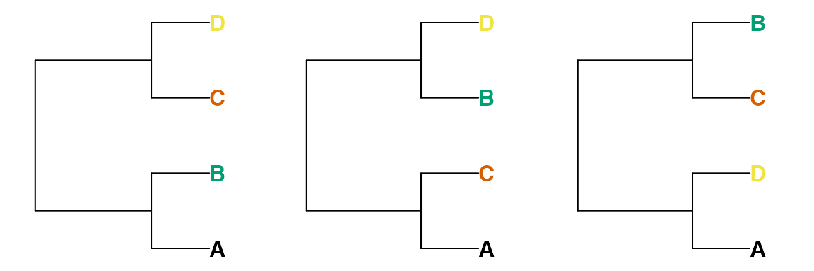
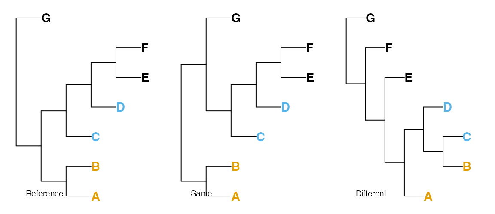
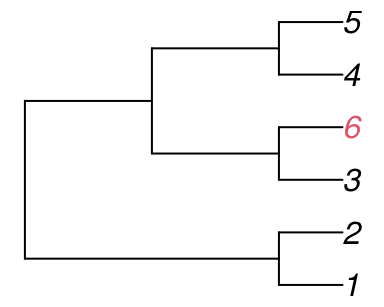
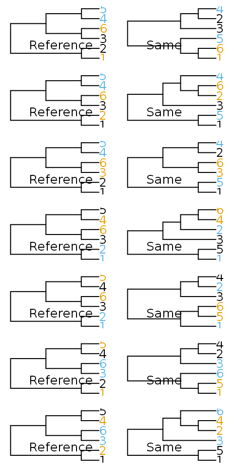

vignettes/Quartet-Distance.Rmd
Quartet-Distance.RmdThe Robinson-Foulds (RF or ‘partition’) metric (Robinson & Foulds, 1981; Steel & Penny, 1993) measures the symmetric difference between two trees by adding the number of splits that are present in tree A (but not tree B) to the number of splits present in tree B (but not tree A).
It is most useful when the trees to be compared are very similar; it has a low range of integer values, limiting its ability to distinguish between trees (Steel & Penny, 1993).
Instead of partitions, symmetric differences can be measured by counting the number of four-taxon statements (quartets) that differ between two trees (Day, 1986; Estabrook, McMorris, & Meacham, 1985).
For any four tips A, B, C and D, a split on a bifurcating tree will separate tip A and either B, C or D from the other two tips. That is to say, removing all other tips from the tree will leave one of these three trees:

Thus two of the random trees below share the quartet (A, B), (C, D), whereas the third does not; these four tips are divided into (A, D), (B, C).

There are \(\binom{n}{4}\) groups of four taxa in a tree with \(n\) tips; for each of these groups, one of the three trees above will be consistent with a given tree. As such, two identical trees will have a quartet distance of 0, and a random pair of trees will have an expected \(\binom{n}{4} / 3\) quartets in common. Because quartets are not independent of one another, no pair of trees with six or more tips can have all \(\binom{n}{4}\) quartets in common (Steel & Penny, 1993).
Properties of the quartet distance are explored fully in Steel (1993).
As quartet distances of 1 can only be accomplished for small trees (five or fewer leaves), it is perhaps more appropriate to consider whether or not trees are more dissimilar than a pair of random trees, whose distance will be, on average, \(\frac{2}{3}\).
When there are six or more tips in a bifurcating tree, some quartets are necessarily shared between trees.
Consider the tree:
tree_a <- ape::read.tree(text="((1, 2), (3, (4, 5)));")
The only trees with no quartets in common with Tree A are symmetric with
tree_b <- ape::read.tree(text="((1, 5), (3, (2, 4)));")
Now create Tree C by adding a 6th tip as a sister to tip 3 on Tree A.
tree_c <- ape::read.tree(text="((1, 2), ((3, 6), (4, 5)));")

There’s nowhere to add tip 6 to Tree B without creating a quartet that exists in Tree C.

On average, \(\frac{1}{3}\) of the quartets resolved in a pair of random trees will match. This is because there are three quartets involving any set of four tips, each of which is equally likely to occur on a truly random tree.
The below code calculates the mean proportion of matching quartets for random trees with 4 to 20 tips, and the corresponding standard deviation.
round(vapply(4:20, function (n_tip) { trees <- lapply(logical(56), function (X) ape::rtree(n_tip, tip.label=seq_len(n_tip), br=NULL)) results <- QuartetStatus(trees)[1, ] / choose(n_tip, 4) c(mean(results[-1]), sd(results[-1])) }, double(2)), 3)
## [,1] [,2] [,3] [,4] [,5] [,6] [,7] [,8] [,9] [,10] [,11] [,12]
## [1,] 0.333 0.333 0.333 0.333 0.333 0.333 0.333 0.333 0.333 0.333 0.333 0.333
## [2,] 0.516 0.516 0.516 0.516 0.516 0.516 0.516 0.516 0.516 0.516 0.516 0.516
## [,13] [,14] [,15] [,16] [,17]
## [1,] 0.333 0.333 0.333 0.333 0.333
## [2,] 0.516 0.516 0.516 0.516 0.516Day, W. H. (1986). Analysis of quartet dissimilarity measures between undirected phylogenetic trees. Systematic Biology, 35(3), 325–333. doi: 10.1093/sysbio/35.3.325
Estabrook, G. F., McMorris, F. R., & Meacham, C. A. (1985). Comparison of undirected phylogenetic trees based on subtrees of four evolutionary units. Systematic Zoology, 34(2), 193–200. doi: 10.2307/2413326
Robinson, D. F., & Foulds, L. R. (1981). Comparison of phylogenetic trees. Mathematical Biosciences, 53(1-2), 131–147. doi: 10.1016/0025-5564(81)90043-2
Steel, M. A., & Penny, D. (1993). Distributions of tree comparison metrics—some new results. Systematic Biology, 42(2), 126–141. doi: 10.1093/sysbio/42.2.126